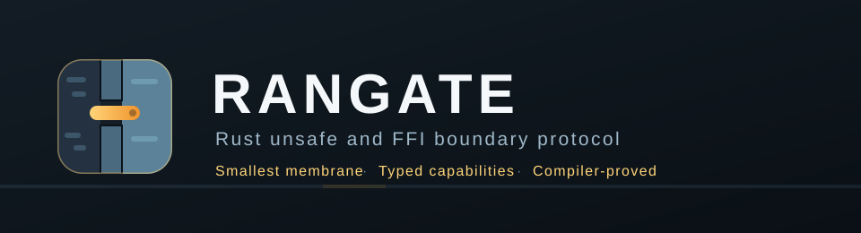

RanGate
Unsafe stays behind the membrane. Safe Rust gets typed capabilities.
Compiler-driven Rust unsafe/FFI boundary protocol: concentrate raw-pointer, ownership, lifetime and thread-safety invariants behind the smallest safe typed membrane, then attack it with independent compiler, doctest, release and Miri checks.
What it does
- Maps the unsafe blast radius before editing, so the refactor has a measurable baseline.
- Converts raw representation at one boundary instead of exporting pointer validity and ownership obligations to callers.
- Uses compile-fail proofs for ownership, aliasing and thread-transport constraints — invalid safe programs must fail to compile.
- Adds independent stable, release and pinned-nightly Miri verification without installing toolchains at skill runtime.
Install
git clone https://github.com/BEKO2210/SkillQuarry.git
cd SkillQuarry/cli && ./install.sh
skillquarry info rangate
skillquarry install rangateInstallation verifies the checksum below before running the skill's own installer.
Quickstart
cd skills/security/rangate && ./install.sh
# In Claude Code, from the target Rust repository:
/rangate Refactor this unsafe/FFI boundary so raw invariants stop leaking into callers. Prove the result with compiler and test evidence.Facts
| Category | Security |
|---|---|
| Version | 1.0.0 |
| Quality | tested |
| License | Apache-2.0 |
| Agents | Claude Code |
| Platforms | linux, macos |
| Tests | 14 — N/A — protocol skill; the Rust fixture is exercised in debug, compile-fail (reason-checked), release and Miri jobs |
| Needs installed | cargo, rustc |
| Network access | none |
| Credentials | none |
| Writes outside the repository | no |
| Irreversible operations | rewrites Rust source files in the target project in place; review the diff before committing |
| Independently reviewed | Independent review, 2026-08-14: defects D5 (compile-fail proofs) and D6 (toolchain handling) found and fixed. |
| Checksum | sha256:e6aad308504e5163c0f28d2011ea7618c9d48ae571f69cf0cd1fbb2a24e59202 |